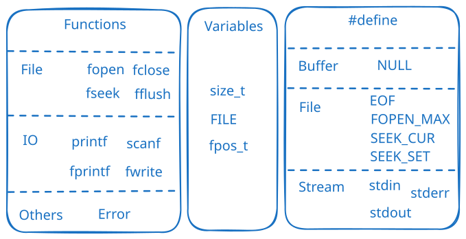
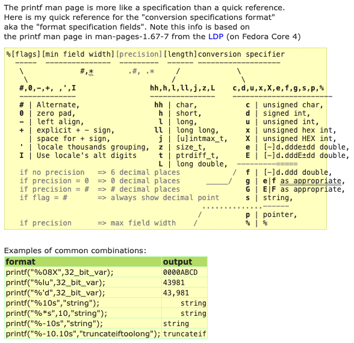

Demo
/* printout.c -- uses conversion specifiers */
#include <stdio.h>
#define PI 3.141593
int main(void)
{
int number = 7;
float pies = 12.75;
int cost = 7800;
printf("The %d contestants ate %f berry pies.\n", number,
pies);
printf("The value of pi is %f.\n", PI);
printf("Farewell! thou art too dear for my possessing,\n");
printf("%c%d\n", '$', 2 * cost);
return 0;
}
// The 7 contestants ate 12.750000 berry pies.
// The value of pi is 3.141593.
// Farewell! thou art too dear for my possessing,
// $15600
一图胜千言

printf format specifications quick reference[2]转换说明[3]
%a 浮点数、十六进制数和p记数法（C99/C11）%A 浮点数、十六进制数和p记数法（C99/C11）%c 单个字符%d 有符号十进制整数%e 浮点数，e记数法%E 浮点数，e记数法%f 浮点数，十进制记数法%g 根据值的不同，自动选择_f或*e。*e格式用于指数小于-4或者大于或等于精度时%G 根据值的不同，自动选择_f或*E。*E格式用于指数小于-4或者大于或等于精度时%i 有符号十进制整数（与d_相同）%o 无符号八进制整数%p 指针%s 字符串%u 无符号十进制整数%x 无符号十六进制整数，使用十六进制数0f%X 无符号十六进制整数，使用十六进制数0F%% 打印一个百分号转换说明修饰符
让程序指定 printf 宽度
/* varwid.c -- uses variable-width output field */
#include <stdio.h>
int main(void)
{
unsigned width, precision;
int number = 256;
double weight = 242.5;
printf("Enter a field width:\n");
scanf("%d", &width);
printf("The number is :%*d:\n", width, number);
printf("Now enter a width and a precision:\n");
scanf("%d %d", &width, &precision);
printf("Weight = %*.*f\n", width, precision, weight);
printf("Done!\n");
return 0;
}
// Enter a field width:
// 10
// The number is : 256:
// Now enter a width and a precision:
// 10 3
// Weight = 242.500
// Done!
scanf() 最不常用，因为他容易卡住。最好用 getchar() 或者 fgets() 吧。
scanf 与 printf 两点不一样
* 变量前要加&
* double 的转换说明是 lf 而不是 f
Demo
// input.c -- when to use &
#include <stdio.h>
int main(void)
{
int age; // variable
float assets; // variable
char pet[30]; // string
printf("Enter your age, assets, and favorite pet.\n");
scanf("%d %f", &age, &assets); // use the & here
scanf("%s", pet); // no & for char array
printf("%d $%.2f %s\n", age, assets, pet);
return 0;
}
// 10 9.9
// a
// 10 $9.90 a
让程序跳过某个输入（读取文件有常用）
/* skiptwo.c -- skips over first two integers of input */
#include <stdio.h>
int main(void)
{
int n;
printf("Please enter three integers:\n");
scanf("%*d %*d %d", &n);
printf("The last integer was %d\n", n);
return 0;
}
// Please enter three integers:
// 1 2 3
// The last integer was 3
如果输入里边有空格，scanf 会认为这是两个输入！另外可以指定输入字符串长度
/* scan_str.c -- using scanf() */
#include <stdio.h>
int main(void)
{
char name1[11], name2[11];
int count;
printf("Please enter 2 names.\n");
count = scanf("%5s %10s", name1, name2);
printf("I read the %d names %s and %s.\n",
count, name1, name2);
return 0;
}
// (base) kimshan@MacBook-Pro output % ./"scan_str"
// Please enter 2 names.
// 123 45
// I read the 2 names 123 and 45.
// (base) kimshan@MacBook-Pro output % ./"scan_str"
// Please enter 2 names.
// 1234567890
// I read the 2 names 12345 and 67890.
// (base) kimshan@MacBook-Pro output % ./"scan_str"
// Please enter 2 names.
// 1234567890 1234567890
// I read the 2 names 12345 and 67890.
/* echo_eof.c -- repeats input to end of file */
#include <stdio.h>
int main(void)
{
int ch;
while ((ch = getchar()) != EOF)
putchar(ch);
return 0;
}
不要用gets这个函数
gets 会访问未规定的内存！！不要用这个函数！C99已经废除，不过大多数编译器保留了。
#include <stdio.h>
#include <stdlib.h>
int main()
{
char array1[8];
fflush(stdin);
gets(array1); // 1234567
puts(array1); // 1234567
char array2[8];
fflush(stdin);
gets(array2); // 12345678
puts(array2); // 12345678
char array3[8];
fflush(stdin);
gets(array3); // 123456789
puts(array3); // 123456789
return 0;
}
// (base) kimshan@MacBook-Pro output % ./"a"
// warning: this program uses gets(), which is unsafe.
// 1234567
// 1234567
// 12345678
// 12345678
// 123456789
// 123456789
// (base) kimshan@MacBook-Pro output
puts看到空字符才会结束。下面的例子打印不是字符串的东西，会出 bug
/* nono.c -- no! */
#include <stdio.h>
int main(void)
{
char side_a[] = "Side A";
char dont[] = {'W', 'O', 'W', '!'};
char side_b[] = "Side B";
puts(dont); /* dont is not a string */
// WOW!Side A
return 0;
}
fgets 会留出\0的位置，超出范围的长度会被截断；fputs 不会自动换行
#include <stdio.h>
#include <stdlib.h>
int main()
{
char array1[8];
fflush(stdin);
fgets(array1, sizeof(array1), stdin); // 1234567
fputs(array1, stdout); // 1234567
char array2[8];
fflush(stdin);
fgets(array2, sizeof(array2), stdin); // 12345678
fputs(array2, stdout); // 1234567
char array3[8];
fflush(stdin);
fgets(array3, sizeof(array3), stdin); // 123456789
fputs(array3, stdout); // 1234567
return 0;
}
// (base) kimshan@MacBook-Pro output % ./"a"
// 1234567
// 123456712345678
// 1234567123456789
// 1234567%
// (base) kimshan@MacBook-Pro output %
很多编译器不支持这个 C11 的新函数！
你是否觉得 fgets 还要用 sizeof 有点麻烦，那就用gets_s吧。但是它没有fgets灵活
#include <stdio.h>
#include <stdlib.h>
int main()
{
char array1[8];
fflush(stdin);
gets_s(array1, 8);
puts(array1);
char array2[8];
fflush(stdin);
gets_s(array2, 8);
puts(array2);
char array3[8];
fflush(stdin);
gets_s(array3, 8);
puts(array3);
return 0;
}
我们写一个自己的 s_gets
char * s_gets(char * st, int n)
{
char * ret_val;
int i = 0;
ret_val = fgets(st, n, stdin);
if (ret_val)
{
while (st[i] != '\n' && st[i] != '\0')
i++;
if (st[i] == '\n')
st[i] = '\0';
else // must have words[i] == '\0'
while (getchar() != '\n')
continue;
}
return ret_val;
}
进行字符串格式化，形成一个字符串保存到某个变量中
/* format.c -- format a string */
#include <stdio.h>
#define MAX 20
char *s_gets(char *st, int n);
int main(void)
{
char first[MAX];
char last[MAX];
char formal[2 * MAX + 10];
double prize;
puts("Enter your first name:");
s_gets(first, MAX);
puts("Enter your last name:");
s_gets(last, MAX);
puts("Enter your prize money:");
scanf("%lf", &prize);
sprintf(formal, "%s, %-19s: $%6.2f\n", last, first, prize);
puts(formal);
return 0;
}
char *s_gets(char *st, int n)
{
char *ret_val;
int i = 0;
ret_val = fgets(st, n, stdin);
if (ret_val)
{
while (st[i] != '\n' && st[i] != '\0')
i++;
if (st[i] == '\n')
st[i] = '\0';
else // must have words[i] == '\0'
while (getchar() != '\n')
continue;
}
return ret_val;
}
// (base) kimshan@MacBook-Pro output % ./"format"
// Enter your first name:
// Charles
// Enter your last name:
// Shan
// Enter your prize money:
// 1000000
// Shan, Charles : $1000000.00
[1] https://www.runoob.com/cprogramming/c-function-fflush.html
[2] https://www.pixelbeat.org/programming/gcc/format_specs.html
[3] https://www.gnu.org/software/libc/manual/html_node/Table-of-Output-Conversions.html